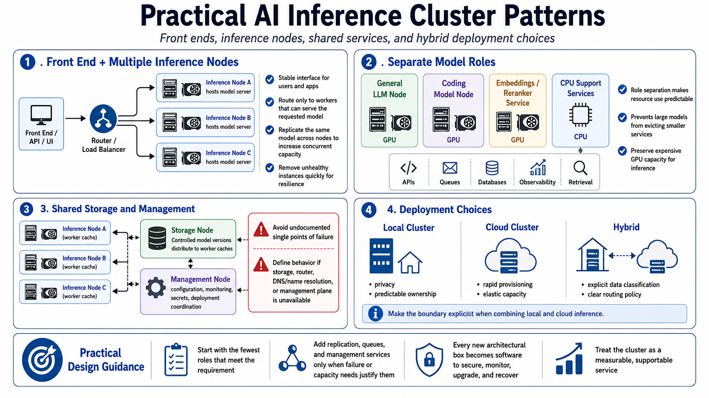

Cluster Architecture Patterns
Connecting to LMS... Progress: in progress

Narration
A practical starting pattern is one front end with multiple inference nodes. The front end provides a stable user or application interface, while each worker hosts a model server. A router or load balancer sends requests only to workers capable of serving the requested model. Replicating the same model across several nodes increases concurrent capacity and creates options for maintenance or failure, provided the routing layer removes unhealthy instances promptly.
Another pattern assigns separate model roles. One node may serve a general language model, another a coding model, and a smaller CPU or GPU service may generate embeddings or rerank search results. Role separation makes resource use predictable and prevents a large model from evicting smaller services. CPU support nodes can host APIs, queues, databases, observability, and retrieval components, preserving expensive GPU capacity for inference.
Storage and management may also be separated. A storage node can hold controlled model versions and distribute them to local worker caches. A management node can provide configuration, monitoring, secrets, and deployment coordination. Avoid making either service an undocumented single point of failure. Define what happens when shared storage, the router, name resolution, or the management plane is unavailable.
Local clusters favor privacy and predictable ownership. Cloud clusters favor rapid provisioning and elastic capacity. Hybrid designs can combine them, but data classification and routing policy must make the boundary explicit. Start with the fewest roles that meet the requirement. Add replication, queues, and management services in response to observed failure or capacity needs, because every architectural box becomes software that must be secured, monitored, upgraded, and recovered.